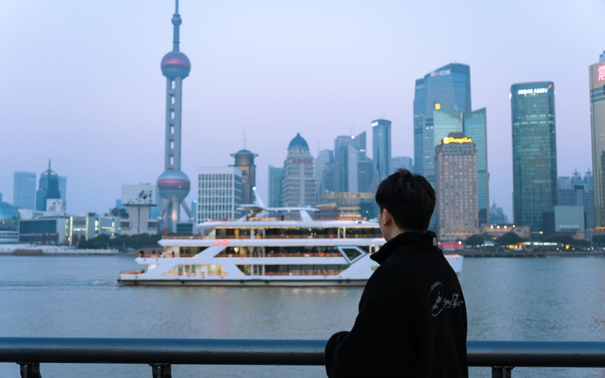
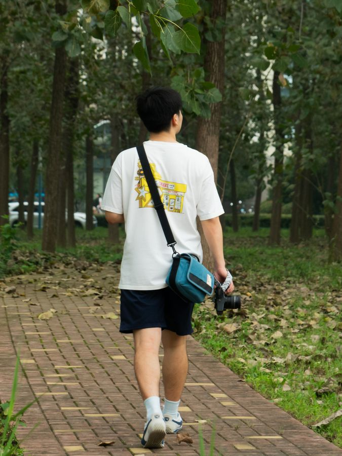
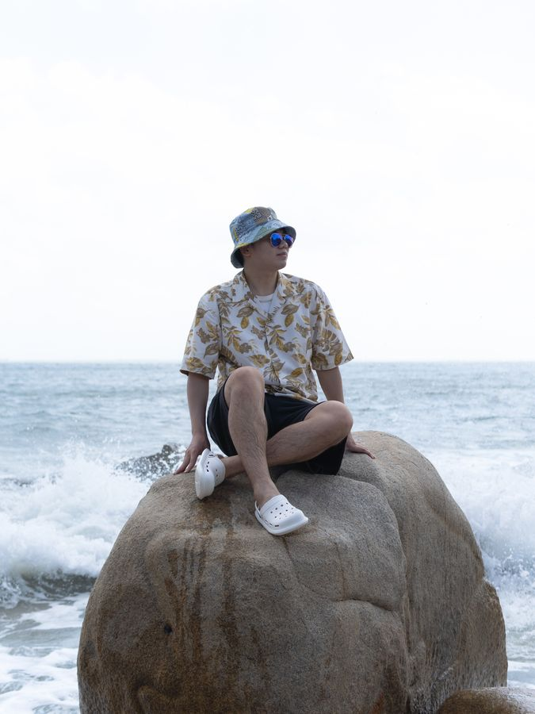
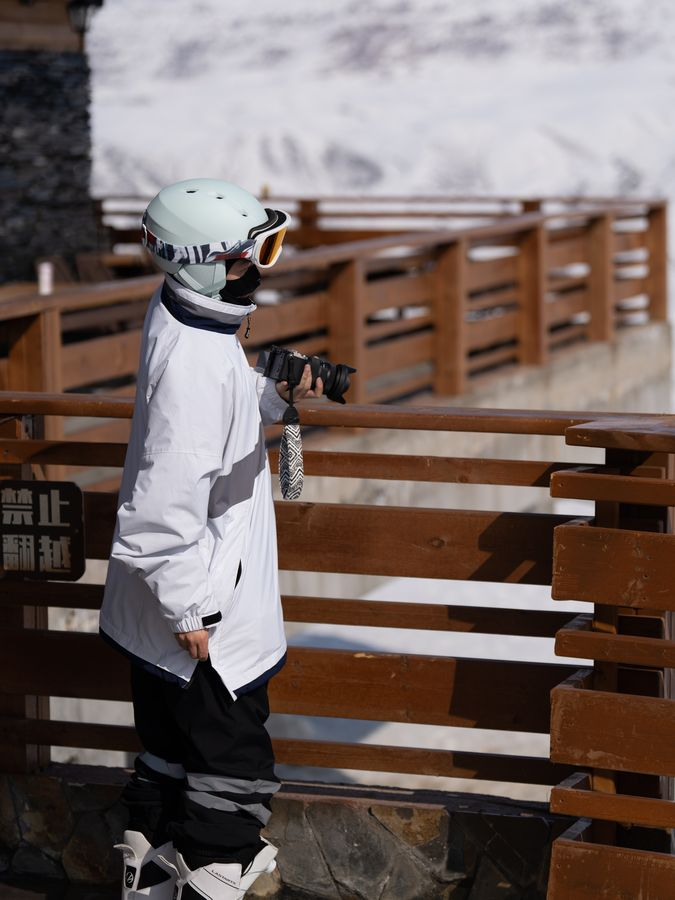
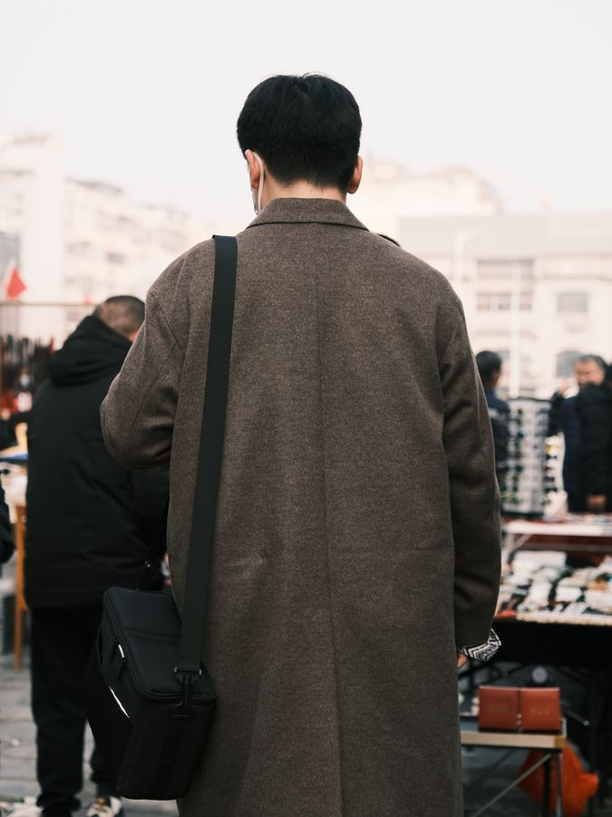
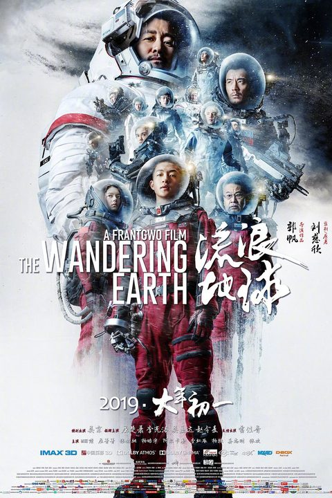
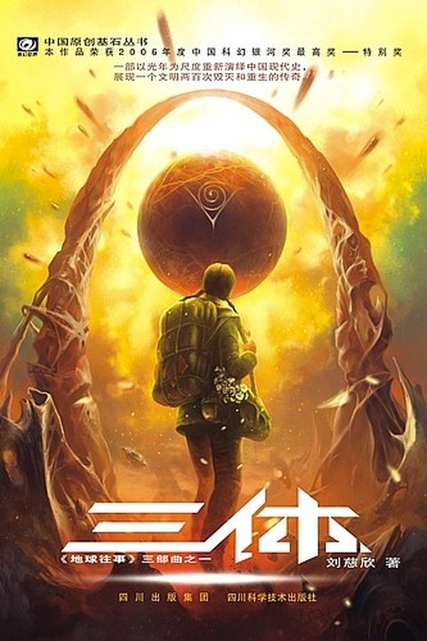
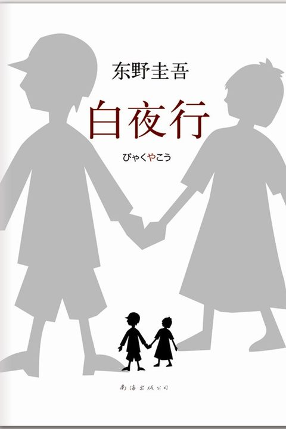
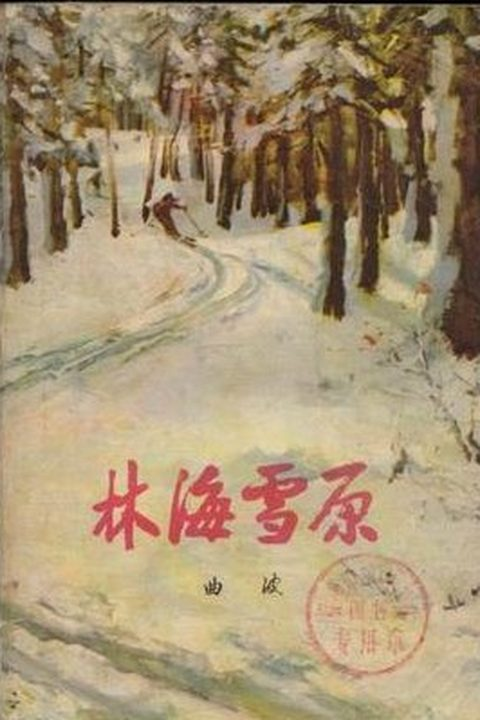

在球场换脑子
曾任常州大学网球协会社长，组织周训也参与校级比赛执裁。约球、聊装备都可以，也因此生长出了香港 57 片球场的天气助手。
网球、摄影和剪辑，是数据之外的几种日常。上海出发，目前在深圳实习；喜欢带着相机压马路，也把一些反复翻看的电影、番剧、书和歌留在这里。

点击任意照片查看大图，支持键盘左右方向键切换、按 Esc 关闭并回到原位置。
古镇园林、海岸线、街头巷尾、列车窗外与雪场——镜头跟着日常换场地，以下为几张拍摄途中的记录。




曾任常州大学网球协会社长，组织周训也参与校级比赛执裁。约球、聊装备都可以，也因此生长出了香港 57 片球场的天气助手。
使用 PR / 剪映剪辑视频，Lightroom / Photoshop 修图。曾任校园新闻部部长，参与两个官方公众号的内容策划与美编排版。
约球、摄影、剪辑或求职交流都欢迎。上海出发，目前在深圳实习；英语可作为交流语言（雅思 7.0）。
科幻、竞速、战争传记大片都看，番剧补日常；书架上科幻、推理与纪实经典居多。








王力宏
Justin Bieber

Charlie Puth